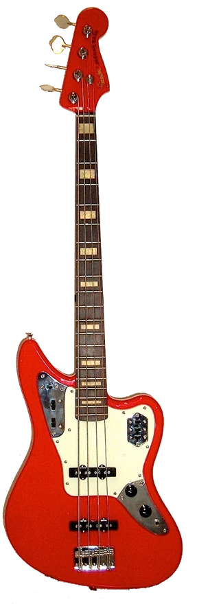
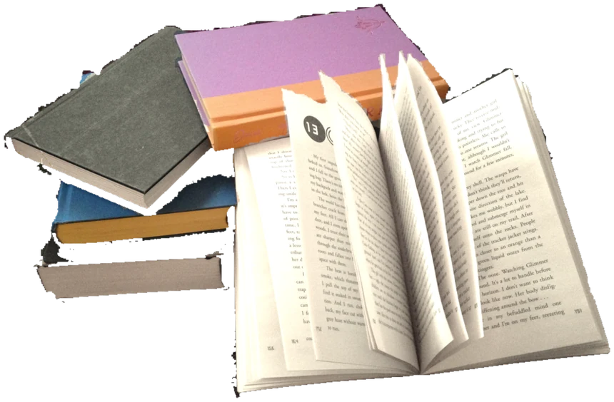
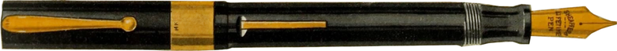
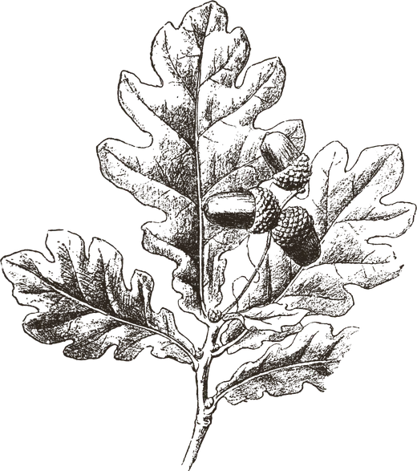
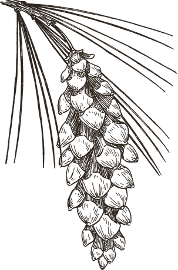
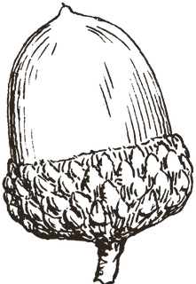
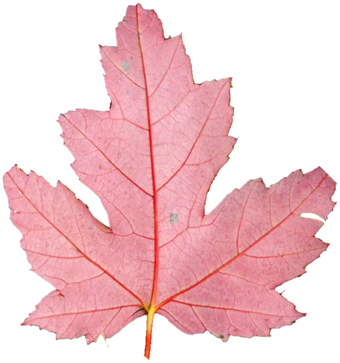

松鼠之窝
✎ 秋天多囤两颗橡果

贝斯模拟器 ↗ Bass Simulator
个人博客 ↗ Quarrey-Z MINI BUJO · 点阵纸页 在线手帐 ↗ 记今天想留下的几行字， 随手写，随手存。 trick-1.pages.dev/BUJ_min
拽一拽会慢慢溜回原位，点物件就能推门去
✎ 秋天多囤两颗橡果

贝斯模拟器 ↗ Bass Simulator
个人博客 ↗ Quarrey-Z MINI BUJO · 点阵纸页 在线手帐 ↗ 记今天想留下的几行字， 随手写，随手存。 trick-1.pages.dev/BUJ_min



